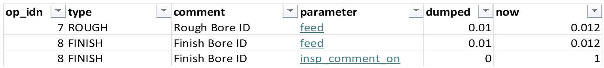

List changes
Ribbon: Parameter Table tab › Undo and review › List changes
What this is for
Makes a Changes sheet: one line for every cell that is different from the dump – the op, its type and comment, the parameter, the dumped value and the value now. Click a parameter to jump to its cell.
When to use it
- Before you load: one last look at everything that will go into the part.
- When you have lost track of what you changed.
Without macros, the changes column on the main sheet counts each row's edits, and
Changed ops shows only those rows.
Steps
- Click List changes. The Changes sheet opens.
- Read down the list. Each line is one cell:
dumpedis the old value,nowthe new. - Click a blue parameter name to go to that cell on the main sheet.
- Run it again any time – it makes a fresh list each time.


Worked example
After raising the bore feeds (ops 7 and 8), the Changes sheet reads:
| op_idn | type | comment | parameter | dumped | now |
|---|---|---|---|---|---|
| 7 | ROUGH | Rough Bore ID | feed | 0.01 | 0.012 |
| 8 | FINISH | Finish Bore ID | feed | 0.01 | 0.012 |
Worked-out columns (times, flips, MRR) are not listed – only what you changed.